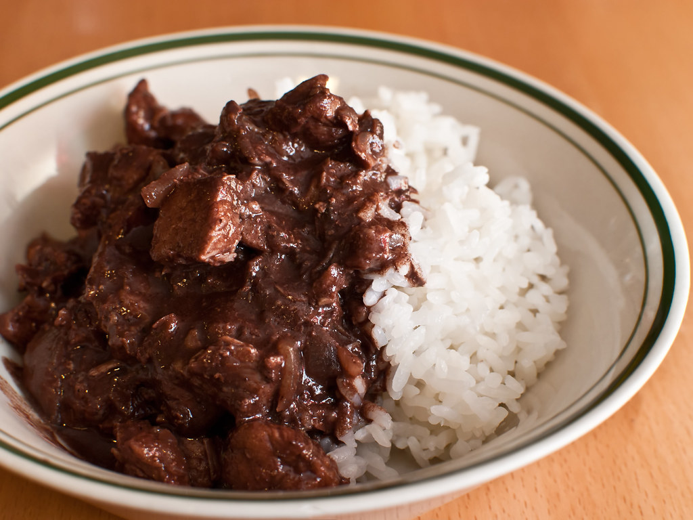

As scary as it is to consume blood willingly, this dish offers it in a more palatable form. It is tricky to cook perfectly on the first try but perseverance will be rewarded. The vinegar cuts through the richness of the blood while the chili peppers give it depth of flavor. Offals are used as the main protein but the process of stewing removes the iron taste and yields a tender, delicious bite for first time tasters.
Most often served with rice for dinner or as a lunch time snack with some puto (steamed rice cakes). Many Filipino restaurants have their own recipe with making dinuguan—others enjoy the tanginess of blood while some prefer to completely cook it down and remove the use of offals entirely. However you want to eat it, it is sure to get you to reconsider other blood-based food.
Ingredients:
Steps:
Notes: